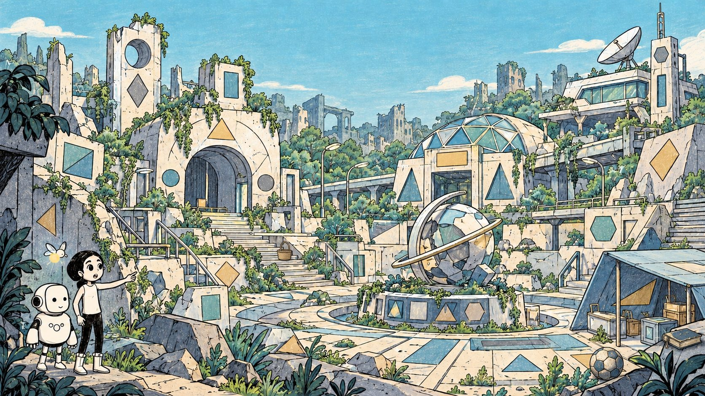

UMA AVENTURA COM AURORA E R.O.N.
O mundo está cheio
de formas.
Vamos encontrá-las?
Explore os abrigos, investigue as formas e descubra alguns objetos do cotidiano deixados pelo caminho. Cada descoberta abre uma nova pergunta.
18 desafios diferentes em três cenários • sem limite de tempo • pode jogar em equipe

OBSERVE · INVESTIGUE · CRIE00:00
Toque em uma figura do cenário para investigar.
Você pode explorar sem pressa.
Como jogar Observe → toque na figura → responda → escute a devolutiva → avance.
MISSÃO CONCLUÍDA
Vocês reconstruíram
novas descobertas!
Uma boa exploração combina observação, explicação e revisão. Continuem procurando geometria no mundo!